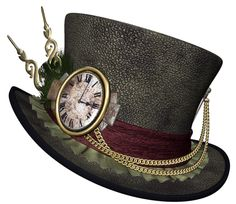
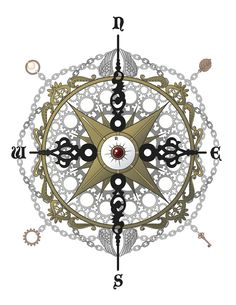

About Us
For my own project, the challenges faced were compounded by my 2012 beginning roughly. Plans I had for the year, in particular making a book trailer for The Janus Affair, took a backseat to priorities like paying the bills while on a severance package and finding a new day job. Imagine my surprise when my good friend Linc (who had shot the Phoenix Rising trailer with me back in 2011) turns to me—immediately after I had grumbled about the frustrations of a job hunt—and asks, “So when are we shooting a trailer for the new book?” Imagine how heightened my level of surprise was when my wife and co-author of The Ministry of Peculiar Occurrences series, Pip Ballantine, turns to me and says “Yeah, when are we going to shoot our book trailer?”
After a mad flurry of phone calls, tweets, and text messages in the midst of a job hunt, I secured location shots, dates, and times. Now came the second part of pre-production: scene adaptation and storyboarding….

